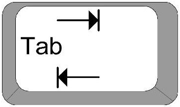

2.3 El espacio de trabajo (Workspace)
El espacio de trabajo es el ambiente actual de trabajo en R. Incluye todos los objetos definidos por el usuario (vectores, matrices, funciones, dataframes, listas).
Una sesión de R inicia cuando abres la consola. Al terminar el trabajo se puede guardar la imagen del espacio de trabajo tal cual está, de manera que sea posible continuar desde donde te quedaste (Kabacoff 2015, pág. 11).
2.3.1 Directorio de trabajo
El directorio de trabajo (working directory) es el directorio en tu computadora en el que estás trabajando en ese momento. Cuando se le pide a R que abra un archivo o guarde ciertos datos, R lo hará a partir del directorio de trabajo que le hayas fijado.
Para saber en qué directorio te encuentras, se usa el comando getwd().
Usa la mnemotécnica del inglés: get working directory ≡ getwd. Notarás como muchas funciones tienen un nombre que acorta lo que hacen.
getwd()## [1] "/home/salim/SOCIEDAT/ssR"Para especificar el directorio de trabajo, se utiliza el comando setwd() (set working directory) en la consola. Y volvemos a
setwd("/home/animalito/study/")
getwd()Ejercicios
-
Abre tu consola de
Ry escribesetwd(). -
Utiliza la tecla
tab para autocompletar las posibles rutas desde donde quiera que estés. - Escoge alguna (nuevamente usando la tecla tab para moverte entre las opciones). Si esto no funciona, teclea textualmente alguna de las rutas que ves.
- Cierra la doble comilla y el paréntesis.
- Teclea enter.
-
Debes encontrarte en la ruta elegida cuando tecleas
getwd().
Con lo que acabamos de hacer, R buscará archivos o guardará archivos en la carpeta que obtuviste con el comando getwd(). En R también es posible navegar a partir de el directorio de trabajo. Como siempre,
- ../un_archivo.R le indica a
Rque busque una carpeta arriba del actual directorio de trabajo por el archivo un_archivo.R. - datos/otro_archivo.R hace que se busque en el directorio de trabajo, dentro de la carpeta datos por el archivo otro_archivo.R
Rutas relativas vs. Rutas absolutas
El resultado que se muestra aquí al usar el comando getwd() depende de la computadora en la que se esta trabajando debido a que es una ruta absoluta. Nota como es diferente la ruta que obtienes al correr el comando en tu consola de R. Eso es porque se trata de una ruta absoluta, es decir, es tal que da la ruta (path) completo al directorio en cuestión. Puedes accesar todos los directorios o archivos usando su ruta absoluta.
En investigación reproducible (reproducible research), en investigación colaborativa o incluso cuando trabajas en varias computadoras es una buena idea usar rutas relativas en lugar de absolutas. Esto hace que el código sea menos dependiente de una estructura de archivos o computadora en particular (Gandrud 2013, pág. 67).
En general, es buena práctica configurar el código de un proyecto con rutas relativas. En R en particular, cuando guardas un Rmarkdown y lo corres desde la línea de comandos (o lo tejes desde RStudio), la ruta que está fija -como si hubieras usado el comando setwd() es en donde vive ese archivo, es decir, el directorio en donde está guardado el mismo.
Desde cualquier script puedes llamar a otros usando este tipo de ruta como en el ejemplo anterior.
2.3.2 Ejemplos básicos
La consola permite hacer operaciones sobre números o caracteres (cuando tiene sentido).
# Potencias, sumas, multiplicaciones
2^3 + 67 * 4 - (45 + 5)## [1] 226# Comparaciones
56 > 78 ## [1] FALSE34 <= 34## [1] TRUE234 < 345## [1] TRUE"hola" == "hola"## [1] TRUE"buu" != "yay"## [1] TRUE# módulo
10 %% 4 ## [1] 2Estas operaciones también pueden ser realizadas entre vectores2.
# Creamos un vector con entradas del -1 al 12 y lo asignamos a la variable x
x <- -1:12
# Lo vemos
x## [1] -1 0 1 2 3 4 5 6 7 8 9 10 11 12# Le sumamos 1 a todas las entradas
x + 1## [1] 0 1 2 3 4 5 6 7 8 9 10 11 12 13# Multiplicamos por 2 cada entrada y le sumamos 3
2 * x + 3## [1] 1 3 5 7 9 11 13 15 17 19 21 23 25 27# Sacamos el módulo de cada entrada
x %% 5 ## [1] 4 0 1 2 3 4 0 1 2 3 4 0 1 22.3.3 Comandos útiles
Para enlistar los objetos que están en el espacio de trabajo
ls()## [1] "all" "df" "df2" "group.colors"
## [5] "limpia" "pega.estados" "quita.nas" "x"Para eliminar todos los objetos en un directorio de trabajo (workspace)
rm(list = ls()) # se puede borrar solo uno, por ejemplo, nombrándolo
ls()## character(0)También se puede utilizar/guardar la historia de comandos utilizados
history()
history(max.show = 5)
history(max.show = Inf) # Muestra toda la historia
# Se puede salvar la historia de comandos a un archivo
savehistory(file = "mihistoria") # Por default, R ya hace esto
# en un archivo ".Rhistory"
# Cargar al espacio de trabajo actual (current workspace) una
# historia de comandos en particular
loadhistory(file = "mihistoria")Es posible también guardar el ambiente de trabao (workspace) -en forma completa- en un archivo con el comando save.image() a un archivo con extensión .RData. Puedes guardar una lista de objetos específica a un archivo .RData. Por ejemplo:
x <- 1:12
y <- 3:45
save(x, y, file = "ejemplo.RData") #la extensión puede ser arbitraria.Después puedo cargar ese archivo. Prueba hacer:
rm(list = ls()) # limpiamos workspace
load(file = "ejemplo.RData") #la extensión puede ser arbitraria.
ls()Nota como los objetos preservan el nombre con el que fueron guardados.
Bibliografía
Kabacoff, Robert. 2015. R in Action: Data Analysis and Graphics with R. Manning Publications Co.
Gandrud, Christopher. 2013. Reproducible Research with R and R Studio. CRC Press.